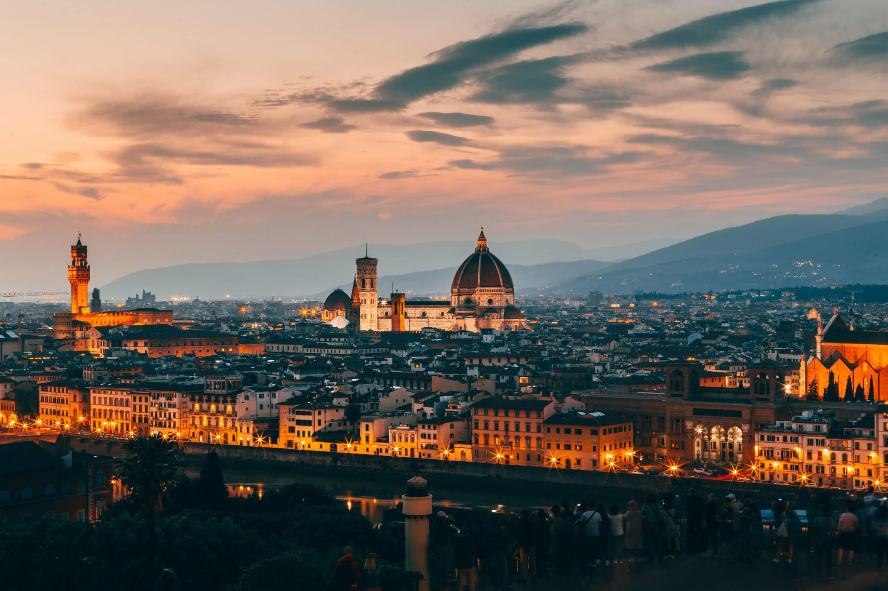

Cosa vedere a Firenze

Firenze è sicuramente una delle città più belle d'Italia, uno di quei luoghi da vedere almeno una volta nella vita. Le sue strade sono ricche di storia, i musei tra i più belli al mondo. Antichi palazzi, sculture, arte ovunque: passeggiare tra le vie di Firenze è davvero un'esperienza straordinaria.
Ecco una lista delle cose da non perdere nella città di Firenze
- Il Duomo di Firenze (Cattedrale di Santa Maria del Fiore)
- La Basilica di Santa Croce
- Ponte Vecchio
- La Cupola del Brunelleschi
- Il Museo degli Uffizi
- Palazzo Pitti
ORARI DI APERTURA
| Lunedì | 10:00 - 17:00 |
|---|---|
| Martedì | 10:00 - 17:00 |
| Mercoledì | 10:00 - 17:00 |
| Giovedì | 10:00 - 17:00 |
| Venerdì | 10:00 - 17:00 |
| Sabato | 10:00 - 16:45 |
| Domenica | 13:30 - 16:45 |
Il Duomo di Firenze, il cui nome completo è Cattedrale di Santa Maria del Fiore, è la quarta chiesa europea per grandezza, con le sue tre navate, le facciate esterne in marmo bianco e verde e i suoi interni spogli di arredi ma dominati da un ciclo di affreschi monumentali realizzati da Giorgio Vasari e Federico Zuccari, tra il 1572 e il 1579. La cattedrale fu iniziata alla fine del XIII secolo da Arnolfo di Cambio, mentre la bellissima cupola di Filippo Brunelleschi fu aggiunta nel XV secolo. La facciata è ricoperta di marmi color rosa, bianco e verde.
La facciata della cattedrale fu l’ultima ad essere realizzata ed eseguita su progetto di Emilio De Fabris tra il 1871 ed il 1887, in uno stile neo-gotico. La facciata, appunto, onora la Madonna, raffigurandola in trono con uno scettro fiorito mentre domina tutto il resto. All’interno, la Cattedrale si presenta immensa, ma quasi spoglia negli arredi. Questa sobrietà corrisponde all’ideale spirituale della Firenze medievale e del primo Rinascimento, che suggerisce, in termini architettonici, la spiritualità dei grandi riformatori della vita religiosa fiorentina.
Indirizzo
ORARI DI APERTURA
| Lunedì | 9:30 - 17:30 |
|---|---|
| Martedì | Chiuso |
| Mercoledì | 9:30 - 17:30 |
| Giovedì | 9:30 - 17:30 |
| Venerdì | 9:30 - 17:30 |
| Sabato | 9:30 - 17:30 |
| Domenica | 13:00 - 17:30 |
Firenze è una città ricca di chiese meravigliose. Oltre al Duomo, imperdibile anche una visita alla Basilica di Santa Croce, nell'omonimo quartiere, nella parte orientale del centro storico. Si tratta di una delle basiliche francescane più antiche ed imponenti mai costruite in Italia. Non appena arriverete nella piazza di Santa Croce, il vostro sguardo verrà subito rapito dalla bellezza della facciata della Basilica. Proprio vicino potrete vedere anche il Monumento a Dante Alighieri. Al suo interno si trova una vasta collezione di opere d'arte e la tomba di Michelangelo, circondata da 3 statue che rappresentano Pittura, Scultura ed Architettura.
Qui si trovano inoltre il Cenotafio di Dante ed il monumento dedicato a Vittorio Alfieri. All'interno della basilica riposano altri personaggi illustri, d'arte e di cultura, oltre Michelangelo, ad esempio Galileo Galilei. Ma Santa Croce non è solo una “raccolta” di spoglie degli italiani che hanno fatto la storia. In fondo alla basilica ci sono le cappelle affrescate da Giotto con le Storie della Vita di San Francesco. Nella Cappella dei Pazzi, dove Giuliano de Medici venne ucciso e Lorenzo il Magnifico ferito durante la famosa congiura, è conservato il Crocifisso di Cimabue.
Indirizzo

Costruito vicino ad un attraversamento di epoca romana, il Ponte Vecchio fu fino al 1218 l'unico ponte che attraversava l'Arno a Firenze. Il ponte, come lo si vede attualmente, fu costruto nel 1345 dopo che una violenta alluvione aveva distrutto il precedente. Durante la Seconda Guerra Mondiale le truppe tedesche distrussero tutti i ponti di Firenze, eccetto questo. Tuttavia bloccarono l'accesso al ponte distruggendo le due costruzioni medievali ai suoi lati. Ponte Vecchio ha un'architettura singolare, poiché, la sua struttura rappresenta il proseguimento della strada.
È composto da tre valichi ad arco ribassato, con il passaggio fiancheggiato da due file di botteghe artigiane. Nel 1565 l’architetto Giorgio Vasari costruì per Cosimo I De’ Medici il Corridoio Vasariano per mettere in comunicazione il centro politico e amministrativo di Palazzo Vecchio. Lungo circa un chilometro, parte da Palazzo Vecchio, passando dalla Galleria degli Uffizi, quindi sopra le botteghe, per proseguire sulla riva sinistra fino a Palazzo Pitti.

La cupola è un capolavoro assoluto dell’arte, il simbolo di Firenze, del Rinascimento e dell’umanesimo in generale. Con il suo diametro di 45,5 metri e un’altezza totale di più di 116 metri, la Cupola è la più grande volta in muratura del mondo e fu costruita tra il 1420 e il 1436 da Filippo Brunelleschi, seguendo il progetto da lui presentato al concorso indetto dall’Opera nel 1418. L'innovazione del Brunelleschi fu quella di voltare la Cupola senza uso di armature di sostegno. La cupola infatti è costituita da 2 cupole distinte: una interna, costituita da grandi archi e realizzata in mattoni e una esterna, rivestita in tegole di cotto e da otto costoloni di marmo bianco.
L’oculo della cupola è sormontato dalla grande lanterna: una torre in marmo bianco alta 21 metri, che fu realizzata dopo la morte del Brunelleschi (1446) ma seguendo il suo progetto. Sulla sommità si trova la palla di rame dorato con croce apicale, opera d'Andrea del Verrocchio, che la mise in opera nel 1471.
ORARI DI APERTURA
| Lunedì | Chiuso |
|---|---|
| Martedì | 08:15 – 18:30 |
| Mercoledì | 08:15 – 18:30 |
| Giovedì | 08:15 – 18:30 |
| Venerdì | 08:15 – 18:30 |
| Sabato | 08:15 – 18:30 |
| Domenica | 08:15 – 18:30 |
La Galleria degli Uffizi, nel centro storico di Firenze, è un vero e proprio gioiello. Un luogo magnifico in cui sono conservate alcune delle opere più belle dell'arte del Trecento e del Rinascimento. Ed è uno dei musei più famosi e visitati al mondo per le sue pregevoli collezioni di dipinti e di statue antiche. Costruita per volontà del granduca Francesco I e su progetto del grande architetto Giorgio Vasari, la Galleria corona l'ultimo piano del maestoso edificio degli Uffizi. La loggia, arricchita di capolavori nei secoli, è la testimonianza dell’amore per l’arte dei numerosi esponenti della dinastia dei Medici.
La visita nelle ampie sale della Galleria è fonte di una continua meraviglia: sculture classiche, arazzi, arredi e soprattutto capolavori di pittura (dall’arte del Trecento a quella Rinascimentale, giungendo sino al ‘700). È così possibile ammirare, tra gli altri: l'Adorazione dei Magi di Gentile da Fabriano, il Trittico Portinari di Hugo van der Goes, la Primavera e la Venere di Botticelli, l'Adorazione dei Magi di Leonardo, Il Tondo Doni di Michelangelo, la Madonna del Cardellino di Raffaello, la Venere d'Urbino di Tiziano, il Bacco del Caravaggio.
Indirizzo
Edificio illustre, antica residenza dei granduchi di Toscana e dei re d’Italia, Palazzo Pitti attualmente è un importante complesso che comprende Gallerie e Musei, in cui sono magnificamente conservati importanti collezioni di dipinti e sculture, oggetti d’arte e porcellane. Fanno parte del complesso la Galleria Palatina, la Galleria di Arte Moderna. Il Palazzo subì ampliamenti e modifiche, i più importanti ad opera dell’Ammannati che realizzò il fastoso cortile interno, con il motivo a gradoni che ebbe tanta fortuna nelle corti europee, e la sistemazione del Giardino di Boboli.
Oggi Palazzo Pitti resta un esempio di grandissima e innovativa architettura rinascimentale, con le sue sale riccamente decorate e gli splendidi Giardini di Boboli. Uniti a Palazzo Pitti ci sono i Giardini di Boboli dove i fiorentini amano trascorre il tempo libero per trovare un po’ di pace e sfuggire al caldo estivo circondati dalla gloria e dalla grandezza della famiglia dè Medici. Il Giardino è collegato direttamente al Giardino Bardini e al Forte Belvedere.